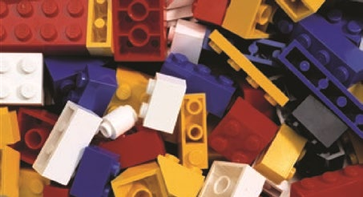
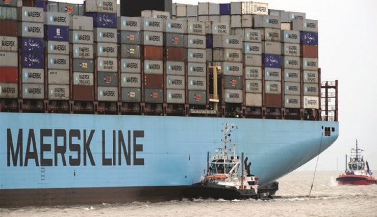

Fakta-ark 5: Dansk
Áudio
sidde 30
Fakta-ark 5: Dansk erhvervsliv
Læremateriale Til Medborgerskabsprøven
sidde 31
Det danske erhvervsliv består af forskellige sektorer.
Læremateriale Til Medborgerskabsprøven Fakta-Ark 5: Dansk Erhvervsliv
Dette fakta-ark omhandler: • Det danske landbrug • Dansk industri • Dansk søfart • Danske serviceydelser • Danmarks samhandel med udlandet
Dansk Landbrug
Danmark har traditionelt været et landbrugsland med stor eksport* af fødevarer. Frem til 1960 var der knap 200.000 selvstændige landmænd. I modsætning til mange lande var Danmark domineret af de mellemstore landbrug. Det var baggrunden for en ualmindelig stærk og velorganiseret bondestand, der selv opbyggede og ejede fødevareindustrien. Siden 1960 er antallet af landbrugs bedrifter faldet med omkring 80 procent, og der er kun ca. 10.000 fuldtidsland mænd tilbage. Småbønderne forsvandt, og mange landbrug er lagt sammen.
I dag er landbrugene meget store og højeffektive. Omkring 11 procent af land brugsarealet drives økologisk. Danmark har fortsat en stor fødevareindustri. Fra 1880’erne oprettede landmændene talrige små selvstændige mejerier og slag terier. Det var andelsselskaber, ejet af landmændene.
I andelsselskaberne har hver landmand én stemme, uanset hvor meget mælk eller hvor mange dyr, de leverede. De allerfleste mejerier og slagterier er nu lagt sammen i store koncerner, hhv. Arla og Danish Crown.
De eksporterer til hele verden. Men de er stadig andelsselskaber.
Arla går i dag ud over Danmarks grænser. I 2000 blev de danske og svenske mejerier lagt sammen, og udvidelsen er fortsat. Arla ejes i dag af næsten 10.000 landmænd fra syv lande: Danmark, Sverige, Tyskland, Holland, Belgien og Luxembourg samt Storbritannien. I Danmark og Sverige er de fleste mælke bønder med. I Tyskland er Arla blandt de tre største. Arla var i 2024 verdens 7. største mejerikoncern.

sidde 32
Dansk Industri
Læremateriale Til Medborgerskabsprøven Fakta-Ark 5: Dansk Erhvervsliv
Dansk industri har traditionelt været præget af mange små og mellemstore virksomheder. Danmark har ikke haft særligt mange store industrivirksomheder, sammenlignet med de fleste andre lande i Vesteuropa. De små og mellemstore virksomheder har været gode til at finde nicher* og hurtige til at omstille sig. Men de store virksom heder er blevet større. Danmark har mange virksomheder, der er kendt i hele verden. Den mest kendte er nok LEGO, der fremstiller byggeklodser til børn i snart sagt alle lande.
Dansk industri spreder sig over mange områder. Danmark har mange store medicinalvirksomheder*, hvor Novo Nordisk, der bl.a. fremstiller insulin til patienter med sukkersyge, er en af giganterne*.
Danmark fremstiller også over en tredjedel af verdens høreapparater. De tre største danske producenter GN Store Nord (GN Resound), William Demant (Oticon) og Widex udgør tre af de fem største høreapparat-producenter i verden. Danmark er et af verdens førende lande inden for vedvarende energi og energibesparelser.
Danmark er hjemlandet for den moderne vindmølleindustri, hvor den såkaldte Gedser-mølle (fra 1957) og Tvind-møllen (bygget 1975-78) gav inspiration til en hel folkebevægelse af små vindmøllefabrikanter fra slutningen af 1970’erne og frem.
Verdens største vindmølleproducent (2024) – Vestas – ligger i Danmark. I det hele taget har Danmark en stærk position, når det gælder ”grøn” produktion, herunder energibesparelser, affaldshåndtering, genbrug mv.
Selv internationale virksomheder omfatter bl.a. Rockwool (isolering), Grundfos (pumper mv.), Danfoss (termostater) og Velux (vinduer).
Danmarks Samhandel Med Udlandet
Danmark har en meget åben økonomi, hvor handel med udlandet – ikke mindst nabolandene – spiller en meget stor rolle. Tyskland er det land, som Danmark importerer* mest fra, og USA er det land, som Danmark eksporterer* mest til. Samlet set er eksporten* til andre EU-lande dog klart større end til USA.
I 2025 var Danmarks syv største handelspartnere følgende (i deres andel af værdien af Danmarks samlede udenrigshandel (import og eksport)): USA (14,1 procent), Tyskland (12,7 procent), Sverige (7,8 procent), Holland (5,4 procent), Storbritannien (5,2 procent), Kina (4,8 procent) og Norge (4,0 procent).

sidde 33
Dansk Søfart
Læremateriale Til Medborgerskabsprøven Fakta-Ark 5: Dansk Erhvervsliv
Danmark er også en vigtig søfartsnation med adskillige store rederier. Mærsk er et af verdens to største rederier, der sejler med containere.
Danmark har en stor olieproduktion i forhold til landets størrelse og var i mange år det eneste EU-land, der eksporterede mere olie, end det importerede. Produk tionen er dog faldet kraftigt siden toppen i midten af 00’erne, og det er planen at den skal stoppes helt inden 2050.
Danske Serviceydelser
En række danske virksomheder står også stærkt, når det gælder serviceydelser. ISS har omkring en halv million medarbejdere beskæftiget verden over med rengøring, ejendomsservice, sikkerhed mm. Men også en stribe danske arkitekt firmaer er verdenskendte, ligesom mange ingeniørfirmaer beskæftiger sig med rådgivning verden over.
Dygtige, veluddannede medarbejdere er én vigtig kilde til, at danske firmaer klarer sig godt. God ledelse er en anden. Hertil hører også, at danske virksom heder mere end i de fleste lande er kendetegnet ved at give den enkelte medar bejder ansvar for sit eget arbejdsområde. Det forventes, at medarbejderen ikke blot gør, hvad der bliver sagt, men også selv tager ansvar og initiativ, naturligvis i forståelse med lederen.
Fonte: Læremateriale til Medborgerskabsprøven, SIRI.